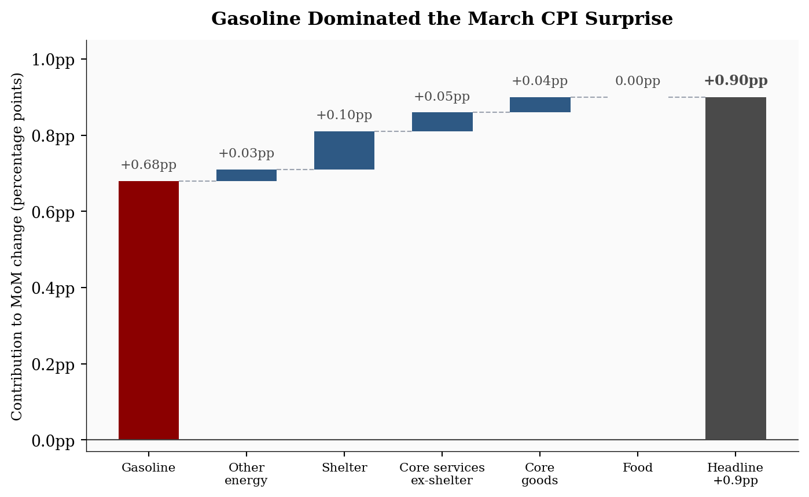
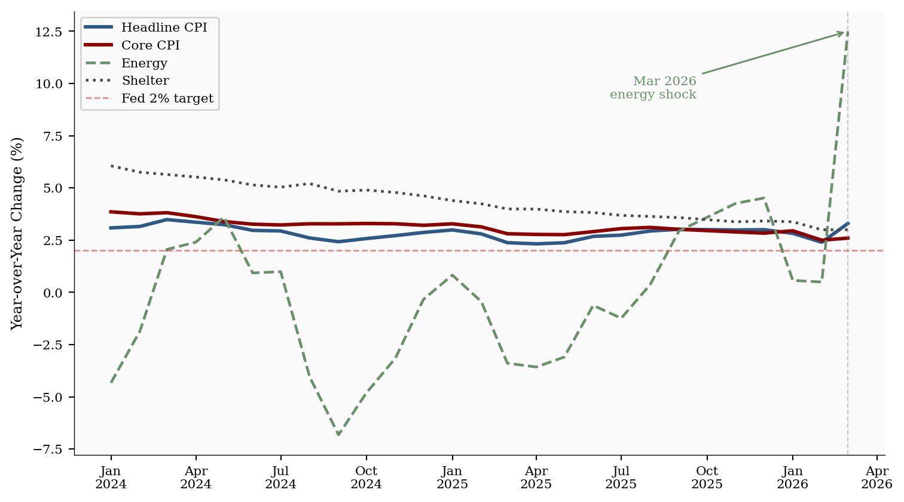
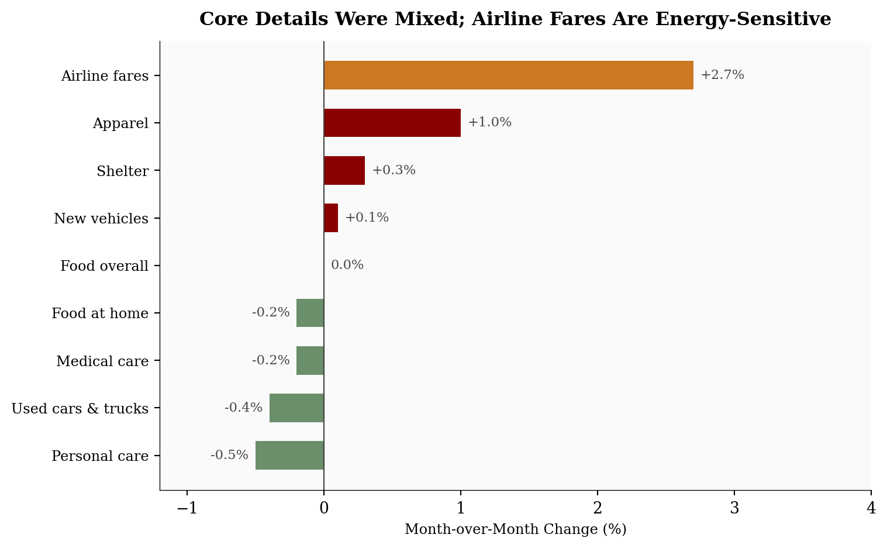

Gasoline drove the biggest monthly jump since 2022, but core stayed steady. What it means for rates, wallets, and markets.
Gasoline drove March 2026 CPI sharply higher, but core inflation stayed steady. What the report means for Fed policy, consumers, and markets.
economics
inflation
data visualization
markets
federal reserve
Published
April 18, 2026
The March 2026 Consumer Price Index delivered the largest monthly increase since June 2022. Headline CPI-U rose +0.9% month-over-month and +3.3% year-over-year, driven almost entirely by a historic surge in gasoline prices.
At first glance, this looks like broad inflation reacceleration. The details point to a narrower story. Energy rose +10.9% in March, led by a historic 21.2% monthly surge in gasoline. Gasoline alone accounted for roughly 75% of the all-items monthly gain. Core inflation, excluding food and energy, stayed at +0.2% MoM and +2.6% YoY.
That distinction matters. For the Fed, a headline shock can delay confidence even when core is stable. For consumers, the pain is concentrated in gasoline and energy bills. For markets, the question is whether this stays a one-month energy shock or starts passing through into transportation services, goods shipping, and inflation expectations.
+0.9%
Headline CPI MoM
vs. +0.3% in Feb; energy lifted the print
+0.2%
Core CPI MoM
same as Feb; no broad reheating
+10.9%
Energy MoM
largest monthly jump since Sep. 2005
+2.6%
Core CPI YoY
vs. +2.5% in Feb; Fed can stay patient
BLS CPI News Release, April 10, 2026 | MoM seasonally adjusted, YoY not seasonally adjusted
1. Headline vs. Core: Same Story, Different Magnitudes
The divergence between headline and core is the defining feature of this print. Strip out gasoline and the March report looks much closer to February.
Key CPI metrics from BLS. Month-over-month values are seasonally adjusted; year-over-year values are official 12-month, not seasonally adjusted changes.
Metric
Mar 2026 MoM (SA)
Feb 2026 MoM (SA)
Mar 2026 YoY (NSA)
Feb 2026 YoY (NSA)
All Items (Headline)
+0.9%
+0.3%
+3.3%
+2.4%
Core (ex-food & energy)
+0.2%
+0.2%
+2.6%
+2.5%
Energy
+10.9%
+0.6%
+12.5%
+0.5%
Food
0.0%
+0.4%
+2.7%
+3.1%
Shelter
+0.3%
+0.2%
+3.0%
+3.0%
NoteReproducing this analysis
All Python code used to generate the charts below is embedded in this post. Click any code block to expand it. The full data pipeline lives in the scripts/ folder:
01_fetch_data.py - Fetches historical CPI series from the FRED API (St. Louis Fed)
02_clean_data.py - Computes historical year-over-year and month-over-month percent changes
04_compute_stats.py - Extracts key statistics and saves stats/summary_stats.json
To rerun the analysis from the post folder:
cd posts/drafts/2026-04-18-march-2026-cpipython scripts/01_fetch_data.pypython scripts/02_clean_data.pypython scripts/04_compute_stats.py
01_fetch_data.py requires a FRED_API_KEY environment variable. If data/raw/fred_cpi_raw.csv is already present, you can skip the fetch step and start with 02_clean_data.py. To rebuild the HTML from the site root:
quarto render posts/drafts/2026-04-18-march-2026-cpi/index.qmd --to html
The headline table and component details use the official BLS CPI News Release for March 2026. Code chunks are folded by default. If you expand them, the comments are meant to explain the analytical choice behind each chart, not every line of plotting syntax. FRED series used for historical charts: CPIAUCSL, CPILFESL, CPIENGSL, CUSR0000SAH1, and CPIFABSL.
What Drove the Headline Jump? A Waterfall of the +0.9pp Move
This chart is the main diagnostic for the post. Instead of showing each CPI component as a separate bar, the waterfall builds the headline increase step by step so the reader can see how much of the final +0.9pp move came from gasoline before everything else is added.
Show code
# =============================================================================# FIGURE 1: WATERFALL CHART - What drove the +0.9% headline CPI jump?# =============================================================================# Purpose: show that gasoline alone accounted for roughly three-quarters of the# entire monthly increase. This is the key visual claim in the post.# Components are ordered by story flow: gasoline first, then the smaller pieces# that complete the headline CPI move.components = ["Gasoline","Other\nenergy","Shelter","Core services\nex-shelter","Core\ngoods","Food",]# Percentage-point contributions to headline CPI.# Conceptually: relative importance weight x monthly percent change.contributions = np.array([ stats["gasoline_contribution_pp"], # ~+0.68pp - the dominant driver stats["energy_contribution_pp"] - stats["gasoline_contribution_pp"], stats["shelter_contribution_pp"],0.05, # Core services ex-shelter0.04, # Core goods0.00, # Food - flat this month])# Build cumulative waterfall steps.final_total = stats["headline_mom"]starts = np.concatenate(([0], np.cumsum(contributions[:-1])))ends = starts + contributionslabels = components + [f"Headline\n{fmt_chg(final_total)}pp"]x = np.arange(len(labels))fig, ax = plt.subplots(figsize=(7.4, 4.6))# Plot the component steps. Gasoline is highlighted because it carries the story.for i, (label, value, bottom, end) inenumerate(zip(components, contributions, starts, ends)): color = COLORS["accent"] if"Gasoline"in label else COLORS["primary"]ifabs(value) <0.005: color = COLORS["light"] ax.bar(i, value, bottom=bottom, color=color, width=0.62, edgecolor="none") display =f"+{value:.2f}pp"if value >0else"0.00pp" ax.text(i, end +0.025, display, ha="center", va="bottom", fontsize=8.5, color=COLORS["neutral"])# Dashed lines connect each step to the next cumulative level.for i, end inenumerate(ends): ax.hlines(end, i +0.31, i +1-0.31, colors="#9ca3af", linestyles="dashed", linewidth=0.8)# Final bar: the reported headline CPI move.ax.bar(x[-1], final_total, bottom=0, color=COLORS["neutral"], width=0.62, edgecolor="none")ax.text(x[-1], final_total +0.025, f"+{final_total:.2f}pp", ha="center", va="bottom", fontsize=9, fontweight="bold", color=COLORS["neutral"])ax.axhline(0, color="#444", linewidth=0.8)ax.set_ylabel("Contribution to MoM change (percentage points)", fontsize=9)ax.set_xticks(x)ax.set_xticklabels(labels, rotation=0, ha="center", fontsize=8)ax.yaxis.set_major_formatter(ticker.FuncFormatter(lambda y, _: f"{y:.1f}pp"))ax.set_ylim(-0.03, 1.05)ax.set_title("Gasoline Dominated the March CPI Surprise", fontsize=12, fontweight="bold", pad=10)plt.tight_layout()

Figure 1: Waterfall contribution to the March 2026 +0.9pp MoM headline CPI gain, by component. Gasoline contributed an estimated +0.68 percentage points, roughly three-quarters of the total monthly move.
2. Component Deep Dive
The energy surge was historic on two fronts. Energy rose +10.9% MoM, the largest monthly increase since September 2005. Gasoline rose +21.2% MoM, the largest single-month increase since that series was first published in 1967. That one component contributed an estimated +0.68 percentage points, roughly 75% of the total headline move. Fuel oil surged +30.7%, the largest jump since February 2000. Electricity was more modest at +0.8% MoM (+4.6% YoY).
Shelter continued its slow grind: +0.3% MoM and +3.0% YoY. It remains the largest single core contributor, but it is not reaccelerating. That is consistent with the deceleration trend tracked in the February inflation post.
Food was flat overall (0.0% MoM) with groceries declining (-0.2%). The notable non-energy index moves were mixed: apparel rose +1.0%, while used cars (-0.4%), medical care (-0.2%), and personal care (-0.5%) declined. Airline fares rose +2.7%, but that is better read as a possible energy pass-through channel than as independent core pressure. Transportation services often react to fuel costs with a lag, so the next one to three months matter more than the March airfare move by itself.
Chart 2: The Longer Trend - Energy Noise vs. Core Signal
This chart separates the noisy headline series from the slower-moving core and shelter trends. The key reader question is whether March changed the underlying inflation path; plotting the year-over-year series makes that easier to see.
Show code
# =============================================================================# FIGURE 2: TREND LINES - Did the energy shock change the broader trend?# =============================================================================# Purpose: compare volatile headline/energy inflation with steadier core and# shelter inflation. The goal is to show "energy shock, not broad reset."plot_df = df[df.index >="2024-01-01"][["headline_yoy", "core_yoy", "energy_yoy", "shelter_yoy"]].copy()# Use official BLS 12-month values for the latest points so the chart matches# the headline table readers just saw.official_yoy = { pd.Timestamp("2026-02-01"): {"headline_yoy": stats["prev_headline_yoy"],"core_yoy": stats["prev_core_yoy"],"energy_yoy": stats["prev_energy_yoy"],"shelter_yoy": stats["prev_shelter_yoy"], }, pd.Timestamp("2026-03-01"): {"headline_yoy": stats["headline_yoy"],"core_yoy": stats["core_yoy"],"energy_yoy": stats["energy_yoy"],"shelter_yoy": stats["shelter_yoy"], },}for date, overrides in official_yoy.items():if date in plot_df.index:for col, value in overrides.items(): plot_df.loc[date, col] = valueseries_config = {"headline_yoy": ("Headline CPI", COLORS["primary"], "-", 2.2),"core_yoy": ("Core CPI", COLORS["accent"], "-", 2.2),"energy_yoy": ("Energy", COLORS["secondary"], "--", 1.7),"shelter_yoy": ("Shelter", COLORS["neutral"], ":", 1.7),}fig, ax = plt.subplots(figsize=(8, 4.5))# Draw each inflation series with a consistent visual identity.for col, (label, color, ls, lw) in series_config.items(): ax.plot(plot_df.index, plot_df[col], label=label, color=color, linestyle=ls, linewidth=lw)ax.axhline(2, color=COLORS["fed_target"], linewidth=1, linestyle="--", alpha=0.45, label="Fed 2% target")mar_date = pd.Timestamp("2026-03-01")if mar_date in plot_df.index:# Place the March callout away from the legend so the label stays readable. ax.axvline(mar_date, color="#888", linewidth=0.8, linestyle="--", alpha=0.45) ax.annotate("Mar 2026\nenergy shock", xy=(mar_date, plot_df.loc[mar_date, "energy_yoy"]), xytext=(-95, -28), textcoords="offset points", fontsize=8, color=COLORS["secondary"], ha="right", va="top", arrowprops=dict(arrowstyle="->", color=COLORS["secondary"], lw=1.1))ax.set_ylabel("Year-over-Year Change (%)", fontsize=9)ax.legend(loc="upper left", fontsize=8, framealpha=0.88)ax.xaxis.set_major_formatter(mdates.DateFormatter("%b\n%Y"))ax.xaxis.set_major_locator(mdates.MonthLocator(interval=3))ax.tick_params(axis="both", labelsize=8)plt.tight_layout()

Figure 2: Year-over-year CPI trends for four major components, January 2024 through March 2026. Core and shelter have been decelerating steadily. Energy’s sharp March spike is a single-month outlier against an otherwise calmer inflation backdrop. The dashed red line marks the Fed’s 2% target.
Chart 3: Selected Non-Energy Components and Pass-Through Channels
The last chart asks whether the non-energy details support a broad inflation reacceleration story. Airline fares are kept in the chart, but highlighted separately, because they can respond quickly to fuel costs even though they are not part of the energy index.
Show code
# =============================================================================# FIGURE 3: CORE DETAILS - Did non-energy categories broadly reaccelerate?# =============================================================================# Purpose: show that outside the direct energy indexes, March was mixed rather# than uniformly hot. Airline fares are highlighted as a pass-through# channel, not treated as independent core pressure.movers = pd.DataFrame({"component": ["Personal care","Used cars & trucks","Medical care","Food at home","Food overall","New vehicles","Shelter","Apparel","Airline fares", ],"mom": [ stats["personal_care_mom"], stats["used_cars_mom"], stats["medical_care_mom"], stats["food_at_home_mom"], stats["food_mom"], stats["new_vehicles_mom"], stats["shelter_mom"], stats["apparel_mom"], stats["airline_fares_mom"], ],}).sort_values("mom", ascending=True)# Colors follow the interpretation: orange for potential energy pass-through,# red for increases, green for declines, and gray for flat.bar_colors = []for component, value inzip(movers["component"], movers["mom"]):if component =="Airline fares": bar_colors.append(COLORS["warning"])elif value >0: bar_colors.append(COLORS["accent"])elif value <0: bar_colors.append(COLORS["secondary"])else: bar_colors.append(COLORS["light"])fig, ax = plt.subplots(figsize=(8, 5))bars = ax.barh(movers["component"], movers["mom"], color=bar_colors, edgecolor="none", height=0.6)for bar, val inzip(bars, movers["mom"]): offset =0.05if val >=0else-0.05 ha ="left"if val >=0else"right" label =f"+{val:.1f}%"if val >0elsef"{val:.1f}%" ax.text(bar.get_width() + offset, bar.get_y() + bar.get_height() /2, label, va="center", ha=ha, fontsize=8.5, color=COLORS["neutral"])ax.axvline(0, color="#444", linewidth=0.8)ax.set_xlabel("Month-over-Month Change (%)", fontsize=9)ax.tick_params(axis="y", labelsize=9)ax.set_xlim(-1.2, 4.0)ax.set_title("Core Details Were Mixed; Airline Fares Are Energy-Sensitive", fontsize=12, fontweight="bold", pad=10)plt.tight_layout()

Figure 3: Month-over-month percent change for selected non-energy CPI indexes, March 2026 (seasonally adjusted). Airline fares are highlighted separately because they are not an energy index, but they can respond quickly to fuel costs. The remaining moves were modest and mixed, consistent with core CPI staying at +0.2% MoM.
3. What It Means for the Fed, Consumers, and Markets
The Fed does not target gasoline prices directly, but it cannot ignore a headline CPI shock this large. The policy question is whether the energy move stays contained or bleeds into inflation expectations and service prices.
For the Fed: Core CPI rose only +0.2% in March, the same pace as February. Shelter is still cooling, food was flat, and several core components declined. That supports the view that the underlying inflation trend has not reset higher. The caution is that headline inflation moved from +2.4% to +3.3% in one month, and gasoline prices are highly visible. With the March jobs rebound reducing labor-market urgency, the practical read is patience, not panic: this print should push rate-cut odds later into 2026, or toward fewer cuts, unless April reverses the energy shock. It does not argue for a new tightening cycle on its own.
For consumers: This was a gasoline shock first. Food overall was unchanged, food at home declined, and core services did not break higher. That matters for household budgets: the pain is immediate at the pump, but it is not yet a broad-based increase in the entire consumption basket. If gasoline remains elevated, the second-round pressure would show up through commuting costs, air travel, shipping costs, and eventually some goods prices.
For markets: The headline number is enough to reprice rate-cut expectations, especially when paired with the March jobs rebound. A stable labor market gives the Fed less reason to look through a fresh inflation shock quickly. The market-positive part is that the core trend remains contained. Core CPI at +2.6% YoY is still above target, but the monthly pace did not accelerate.
Near term: Expect April to be the key test. One large monthly gasoline move does not automatically create a new inflation regime. It does, however, make the next print more important. The April CPI release is scheduled for May 12, 2026.
Risk case: If energy volatility is sustained by a supply shock rather than a one-time adjustment, the pass-through to transportation services and shipping-sensitive goods could take two to three months to appear. That is what to watch in the May and June data.
4. Conclusion
March 2026 CPI was a headline inflation shock, not a clean broad-based reacceleration. The gasoline surge explains most of the move. Core inflation remained steady, shelter kept cooling, and food did not add pressure.
For the Fed, the report argues for caution before cutting rates. For consumers, it is a real hit to gasoline-sensitive budgets. For markets, it is a test of whether investors treat energy as noise or start pricing in broader pass-through. The next CPI report will decide which interpretation wins. April’s print will be the real tell: does energy remain noise, or become signal?
Data sources. Month-over-month values are seasonally adjusted. Year-over-year values in the table and text use official BLS 12-month changes, which are not seasonally adjusted.
Series
Description
Source
CPIAUCSL
CPI All Items, seasonally adjusted index
FRED / BLS
CPILFESL
Core CPI, seasonally adjusted index
FRED / BLS
CPIENGSL
Energy CPI, seasonally adjusted index
FRED / BLS
CUSR0000SAH1
Shelter CPI, seasonally adjusted index
FRED / BLS
CPIFABSL
Food & Beverages CPI, seasonally adjusted index
FRED / BLS
BLS CPI Table A
Official MoM and 12-month CPI changes
BLS CPI News Release, Apr. 10, 2026
Data current as of March 2026 (BLS release: April 10, 2026).